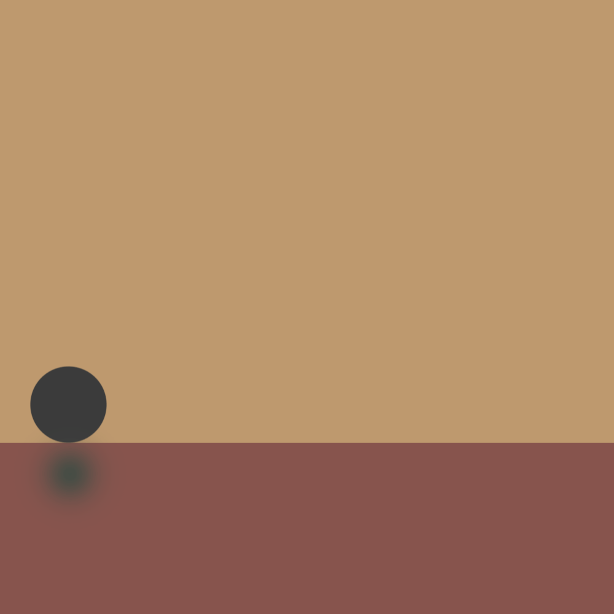

//1. Find a plant that you want to propagate.
//2. Find a clean pair of sciccors.
//3. Find a piece of the plant that you want to propagate.
//4. Look for a node on the section of the plant.
//5. Cut above the node at least half an inch.
//6. Take the cutting and place and place it in vase of clean water.
//7. Place in a spot with bright and indirect light.
//8. Watch the roots grow.
//9. Enjoy your new plant.
// 1. load hand model
// 2. Accept user input
// 3. Validate user move
// 4. Evaluate possible moves
// 5. choose computer moves
// 6. Show moves
// 7. Determine winners
Challenges
The most challneging part was following the instrcutions on given with the Lab 4 but we made it with help from our wonderful TA. I found that JavaScript part to be redundant with what we're doing in this lab but it probably has more useful applications for website deisgn besides makig list.
Problems
I didn't have that many problems with this lab, expect for me still confused as what JavaScript is capable of. I have a hard time keeping my code organized is another problem. I also got to get better at uploading images to html.
Results
The results seem good as I did everything that is required of me for this lab. I also spent quite a bit of time on the CSS part which is rather fun and cool to play around with.
